学习目标：
- 掌握幂级数对函数的近似
- 理解线性化的意义及关联
- 学会多元函数的近似表示方法
Taylor Series for approximations
Taylor级数的核心思想是：
对于一个复杂函数$f(x)$, 我们希望用若干其他简单函数的组合去近似$f(x)$, 并且我们的目标函数$f(x)$ 是behave good（e.g. 连续的）的时候，这种方法一定是可行的。指导我们approximate $f(x)$ 的原则如下：
选择函数$f(x)$ 的某一点$(x_0,y_0)$ 作为切入，并且要保证在该点处：
- $g(x_0)=f(x_0)$
- $g^\prime (x_0)=f^\prime(x_0)$
- $g^{\prime\prime}(x_0) =f^{\prime\prime}(x_0) $
- …
换句话说，我用来approximate $f(x)$ 的函数需要在事先选好的某一点处：与$f(x)$ 函数值相同，一阶导数相同，二阶导数相同….n 阶导数相同….. 最终我们的$g(x)$ 可以无限接近$f(x)$。
上面讲到，我们选择$f(x)$ 上的某一点处切入，在满足若干要求之后得到$g(x)$ 可以无限接近$f(x)$. 这就意味着我们通过知道函数上某一点的所有信息（e.g. 函数值，一阶导数，二阶导数,….,n阶导数），就可以获得整个函数$f(x)$ 的全部信息。这是非常令人吃惊的现实，函数$f(x)$ 上的每一个点竟然蕴含了该函数所有的信息，这不能不令人惊叹！这有点像中国有句古语：管中窥豹，可见一斑。 因此，使用Taylor series approximate 函数$f(x)$有另外一种称呼：在一点处将函数$f(x)$ Taylor展开。
简言之，Taylor serise 是用函数的局部来描述整体，而且可以描述的任意接近。
当然，Taylor series 还有一些其他的细节问题，但是上面的内容就是Taylor series 的核心了。
Power series derivation
Power series 是Taylor series 的一种特例，其核心思想是：
You can use a series of increasing power of x to re-express functions.如下图所示，
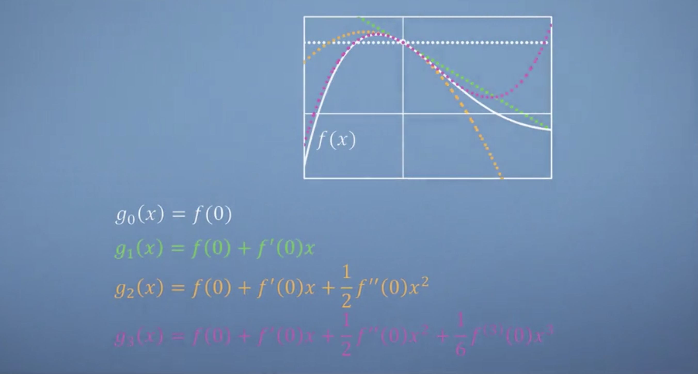
我们下面推导函数的幂级数表示：
幂函数的集合为： ${1=x^0,x,x^2,x^3,…,x^n,…}$, 我们需要找到它们的线性组合权重系数，使得组合的结果接近$f(x)$. 我们令：
$g(x) = a_0 + a_1x + a_2x^2 + a_3x^3+….a_nx^n+…$
我们需要找到这些权重系数：${a_0,a_1,…,a_n }$
我们选择在$(x=0,f(0))$ 这一点做切入点，那么依照上小节的结论我们有：
$$
\begin{align}
g(0) &= f(0) \Rightarrow a_0 = f(0) \\
g^\prime(0) &= f^\prime(0) \Rightarrow a_1 = f^\prime(0) \\
g^{\prime\prime}(0) &= f^{\prime\prime}(0) \Rightarrow a_2 = \frac{f^{\prime\prime}(0)}{2} \\
g^{(3)}(0) &= f^{(3)}(0) \Rightarrow a_3 = \frac{f^{(3)}(0)}{6} \\
\cdots \\
g^{(n)}(0) &= f^{(n)}(0) \Rightarrow a_n = \frac{f^{(n)}(0)}{n!}\\
\cdots \\
\end{align}
$$
我们得到了所有我们想要的权重系数，并且只用函数在$x = 0$ 这一点处的全部信息。此时，我们就知道了函数$f(x)$ 的全部， 即：
$$
\begin{align}
&\color{blue}{ f(x) = g(x) = f(0) + f^\prime(0)x + \frac{f^{\prime\prime}(0)}{2} x^2 + \cdots + \frac{f^{(n)}(0)}{n!}x^n + \cdots= \sum_{n=0}^{\infty} \frac{f^{(n)}(0)}{n!} x^n }\\
\end{align}
$$
PEND.
在上图中，我们会明显地发现当高阶term不断加入的时候，之前已经有的低阶项会保持不变，高阶项的加入扩大了接近的范围。
上面我们在$x=0$ 点处将函数$f(x)$ Taylor 展开，这种特例叫做：Maclaurin Expansion。
上述Taylor展开是针对一元函数$f(x)$进行的，这种思想可以扩展到n元函数的情况。届时我们就不是approximate 曲线，而是appriximate hyper surfaces。
Example:
根据 Maclaurin series 我们可得：
$$
e^x = g(x) = 1 + x + \frac{1}{2}x^2 + \frac{1}{3!}x^3 + \cdots + \frac{1}{n!}x^n+\cdots
$$
我们从这里也可以发现，对$g(x)$ 求导之后：
$$
g^\prime(x) = g(x) , i.e. (e^x)^\prime = e^x
$$
即：$e^x$ 的各阶导数等于 $e^x$.
PS: 这里有一个可视化的例子用来帮助理解 Taylor Series: link
Power series Details
在$x=0$ 点处用来reconstruct or re-express $f(x)$ 的series 我们称之为： Maclaurin serise.
实际上，我们可以选择在任何一点处对函数做Taylor 展开- 用Taylor series approximate 函数。
对比图如下，
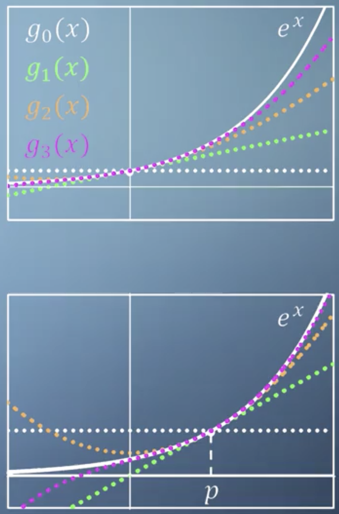
上半部分是Maclaurin 展开，下半部分是在$x=p$ 处 Taylor展开。
在P点：$(p,f(p))$ 即 $x=p$ 处用 Taylor series approximate 函数$f(x)$ （把函数在P点处Taylor泰勒展开）
通用的 Taylor Series 为：
$$
\color{blue}{f(x) = g(x) = f(p) + f^\prime(p)(x-p) + \frac{f^{\prime\prime}(p)}{2!}(x-p)^2 \cdots+\frac{f^{(n)}(p)}{n!}(x-p)^n \cdots = \sum_{n=0}^{\infty} \frac{f^{(n)}(p)}{n!}(x-p)^n}
$$
推导过程与Maclaurin Series类似，这里不展开讲。
区别在于 $x \rightarrow (x-p)$, 实际上相当于在Maclaurin serise 基础上对整个$g(x)$ 沿着 $x$ 轴做了一次平移: 平移量 = $p$.
在$x=0$ 处 我们需要对$\lbrace1=x^0,x^1,x^2,…,x^n,..\rbrace$ 进行组合来approximate $f(x)$.
在$x=p$ 处 我们需要对 $\lbrace1=(x-p)^0,(x-p)^1,(x-p)^2,…, (x-p)^n,… \rbrace$ 进行组合来approximate $f(x)$.
以上两种情况我们都用了统一的原则去求解那些权重系数：$a_0,a_1,…,a_n,…$.且 $a_n = \frac{f^{(n)}(p)}{n!}$.
PS: 所谓统一的原则就是第一小节讲到的 “$g(x)$ 与 $f(x)$ 在$x=p$ 处：函数值相等，一阶导数相等，二阶导数相等,…，n阶导数相等，…”.
Taylor Series 将函数 $f(x)$ 重构成幂函数的线性组合, 此即所谓的linearisation.Examples
Example 1:
将 $cos(x)$ 在$x=0$ 点展开为 Maclaurin serise. $cos(x)$ 函数有两个特点保证我们可以这样做：
- 连续
- 无穷阶可导
Example 2:
将 $\frac{1}{x}$ 在 $x=1$ 点展开为Taylor serise. $\frac{1}{x}$ 函数并不是一个“nice”的函数：
- 在$x=0$ 处并不连续
两个展开见下图
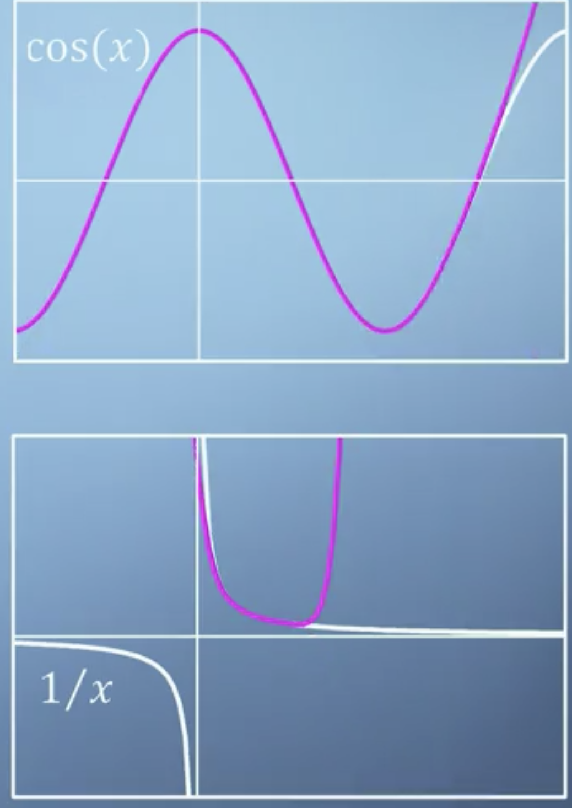
有以下几个特点需要注意：
- 随着不断增加$x$ 的次幂$n$, 近似范围越来越大。但是在近似范围之外，$g(x)$ 与 $f(x)$ 差距很大。因此无论是用Maclaurin series 还是 Taylor series ，都要注意 函数的定义域范围，超出范围的部分并不是approximation
- $cos(x)$ 的 Maclaurin series 展开式中，含有$x$ 的奇次幂的项都消失了，剩下的都是偶次幂项：$1,x^2,x^4…,$ . 换句话说就是这些 basis functions 也都会偶函数，和它们要approximate 的函数 $cos(x)$ 在这方面保持了一致性。
- $\frac{1}{x}$ 在 approximate的过程中，$g(x)$ 直接跨越了渐近线。
- $\frac{1}{x}$ 函数的 Taylor series 展开结果，我们发现只在 $x>0$ 的部分 $g(x)$ 试图approximate 函数$\frac{1}{x}$, 而 $g(x)$ 对于 $x<0$ 的部分, 却完全没有考虑在内。
- 在两个例子中，Taylor series 都表现出$g(x)$ 值 正、负交替出现的情况：这种情况下 $g(x)$ 收敛会很慢。
Multivariable Taylor Series
Linearisation
本节主要解决的问题是：我们想知道当我们用了 Taylor series 对$f(x)$ 做approximation之后，与$f(x)$ 之间的误差-error 是多少.
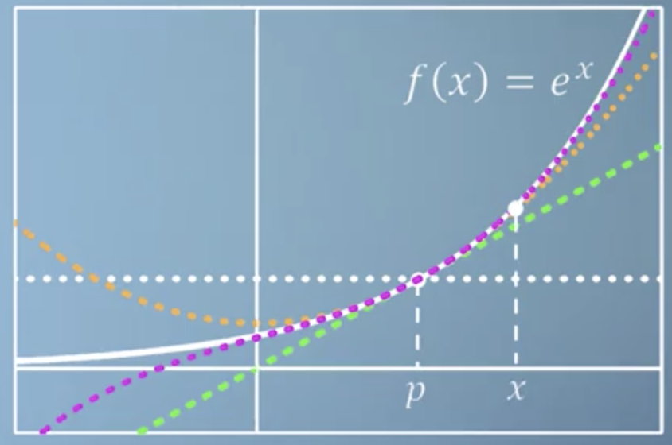
上图是将 $f(x)$ 在$x=p$ 点处 Taylor 展开，i.e.
$$
f(x) = g(x) = \sum_{n=0}^{\infty} \frac{f^{(n)}(p)}{n!} (x-p)^n
$$
其中，first order approximation 是绿色直线，i.e.
$$
\color{green}{g_1(x) = f(p) + f^\prime (p)(x-p)}
$$
first order approximation其实就是在$x=p$ 附近用直线来近似$f(x)$. p 附近的点$x$ 与其距离为: $x-p$，我们将这里距离记为：$\Delta p$ ,此时$x= p+\Delta p$. 如下图所示，
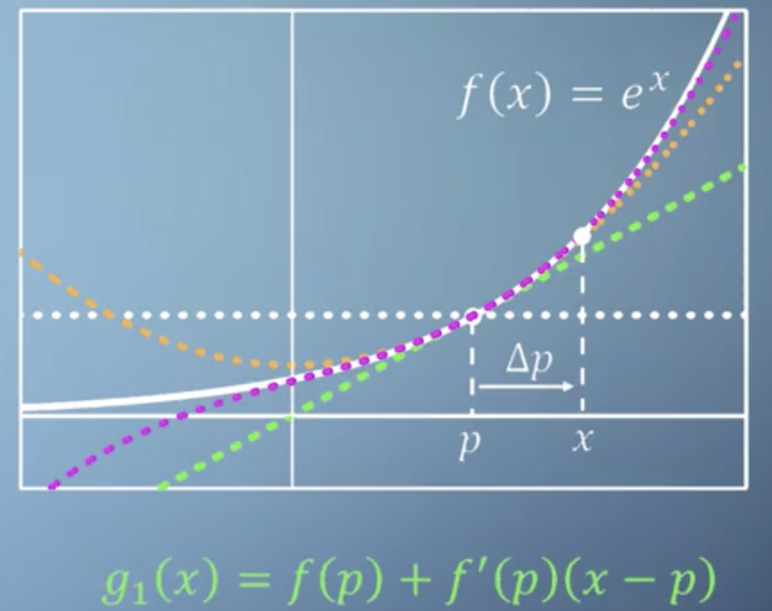
我们可以将 first order approximation 中的 $x$ 替换为 $p$, 如下图所示
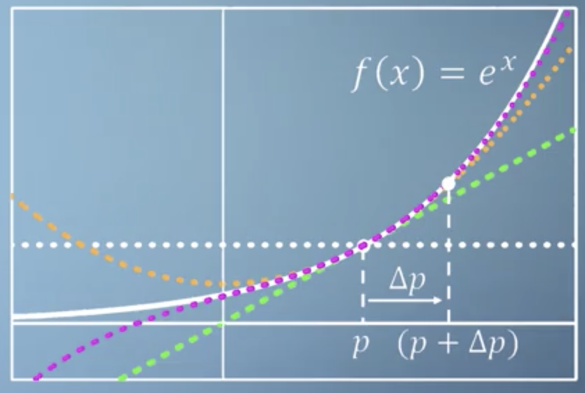
此时一阶近似为，
$$
\color{green}{g_1 (p + \Delta p) = f(p) + f^\prime (p) \Delta p}
$$
$p$ 是我们任意选择的一点，我们把上述图和公式中的 $p$ 替换为 $x$. 替换没有改变任何概念上的事实，只是更符合大家常见的形式。如下图，
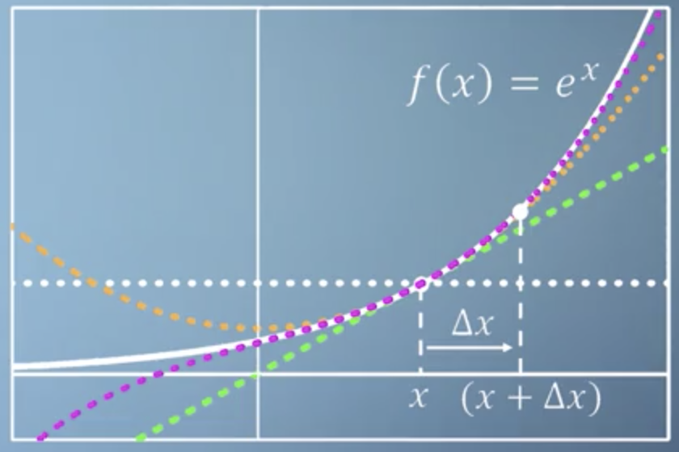
此时一阶近似为，
$$
\color{green}{g_1(x+\Delta x) = f(x) + f^\prime (x) \Delta x}
$$
这个时候，我们按照上述形式可以重写 Taylor series 公式为：
$$
f(x+ \Delta x) = \sum_{n=0}^\infty \frac{f^{(n)}(x)}{n!} (\Delta x)^n
$$
上述公式表示：在任意点$x$ 处函数$f(x)$ 的 Taylor series展开。
我们基于此来考察 我们的 first order approximation 与$f(x)$ 的误差情况。
现在我们把 “新的” Taylor series 公式展开看一下，
$$
f(x + \Delta x) = f(x) + f^\prime(x)\Delta x + \frac{f^{\prime\prime}(x)}{2!} \Delta x^2 + \frac{f^{(3)}(x)}{3!} \Delta x^3 + \cdots
$$
我们只保留一阶项，忽略二阶及以上的项并将他们看作误差：这一过程称之为 Linearisation. 如下，
$$
\color{orange}{f(x + \Delta x) = f(x) + f^\prime \Delta x + O(\Delta x^2)}
$$
换句话说，对$f(x)$ linearise 是要带误差项的， 相比于最初的不带误差项的 first order approximation：$\color{green}{g_1(x+\Delta x) = f(x) + f^\prime (x) \Delta x}$ 而言多了一个 $\color{orange}{\Delta x^2}$.
如下图所示，
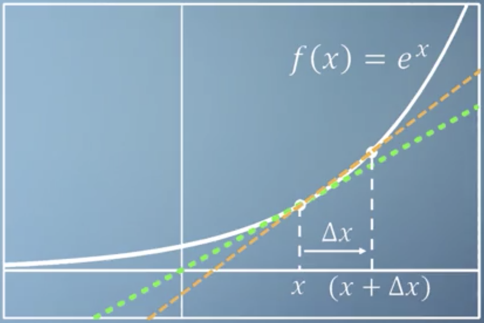
通过 “新的” Taylor series 公式，我们可以得到其导数的近似表达式，
$$
f^\prime(x) = \frac{f(x+ \Delta x) - f(x)}{\Delta x} + O(\Delta x)
$$
当我们使用数值方法通过计算机计算导数或者函数值的时候，上面讲到的所有近似思想和公式有重要的意义。
这里有一个关于 Taylor series 的练习帮助理解，link
Multivariate Taylor
之前我们讨论的是用 Taylor serise 对一元函数 $f(x)$ 做approximation。 对于多元函数的情况 Taylor series 同样起作用。
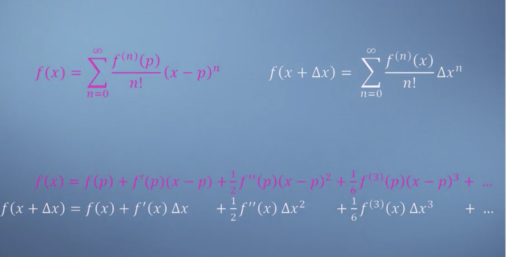
上面的对比图显了2种 Taylor series一项一项的对比，出于简便的目的现采用如下形式的 Taylor series：
$$
f(x+\Delta x) = f(x) + f^\prime(x)\Delta x + \frac{f^{\prime\prime}(x)}{2}\Delta x^2 +…
$$
假设有2元函数 $f=f(x,y)$, 我们要回答如下问题
$$
f(x+\Delta x, y+\Delta y)= \color{red}{\ ?}
$$
考虑的如下现实原因，
- 多元函数二阶以上导数是 Tensor，不方便表示和计算
- 多元函数的二阶 Taylor series 在小范围内已经可以做到很好的approximation。
针对二元函数（or 多元函数）我们只考虑截断到二阶的 Taylor series。
Example： Gaussian function $f(x,y) = e^{-(x^2+y^2)}$ 入下图所示，
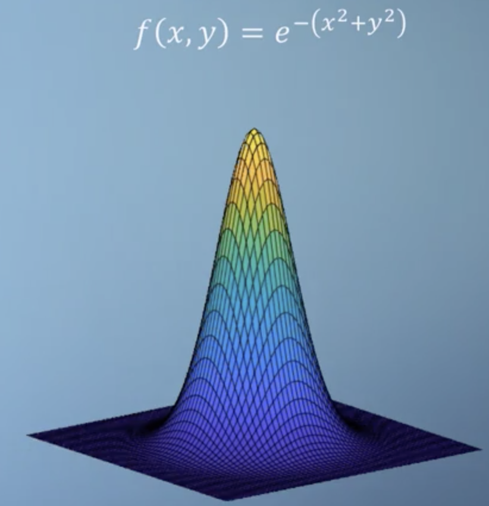
0 order approximation $\color{blue}{g_0(x+\Delta x, y+ \Delta y)}$. 如下图所示，
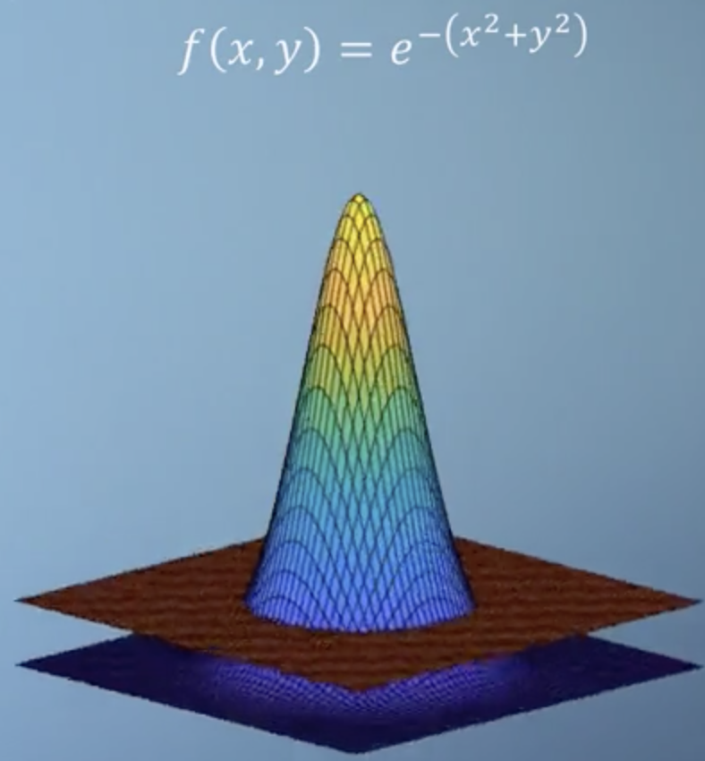
1 order approximation $\color{blue}{g_1(x + \Delta x, y+\Delta y)}$. 如下图所示，
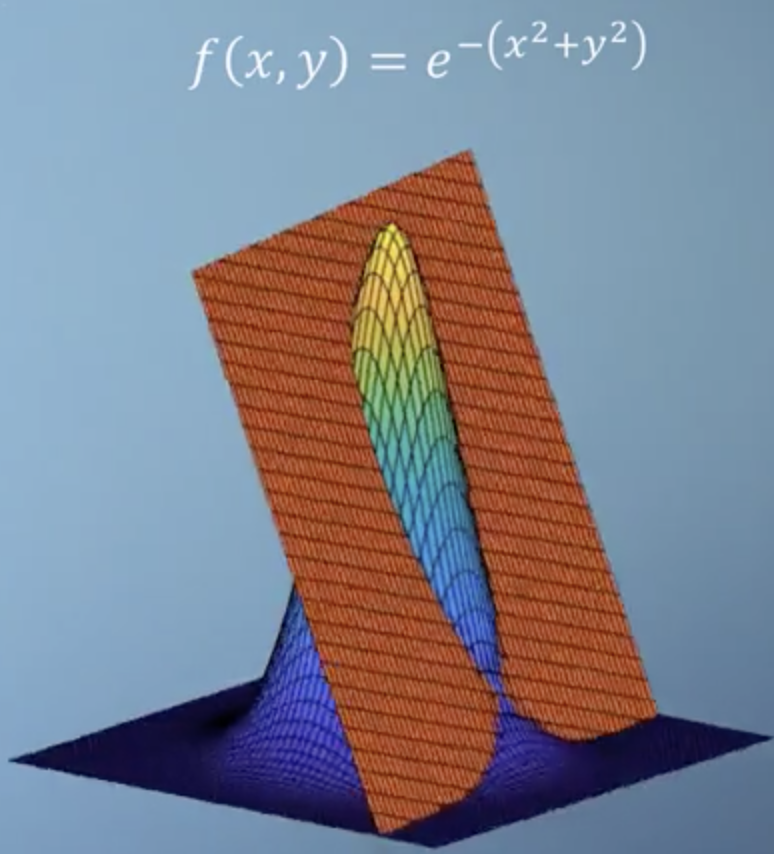
2 order approximation $g_2(x + \Delta x,y+ \Delta y)$. 如下图所示，
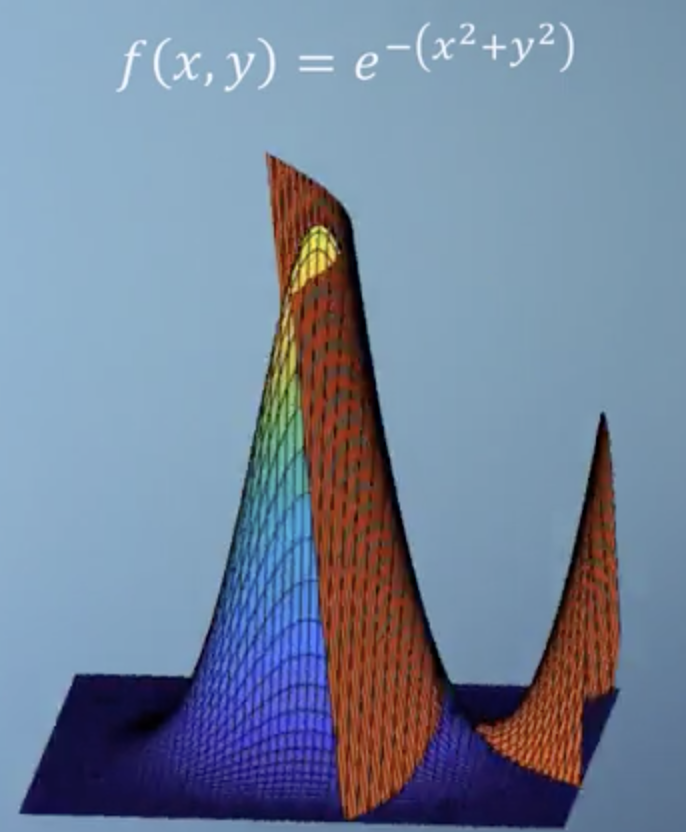
现在我们给出 2元 Taylor series（二阶）如下图，
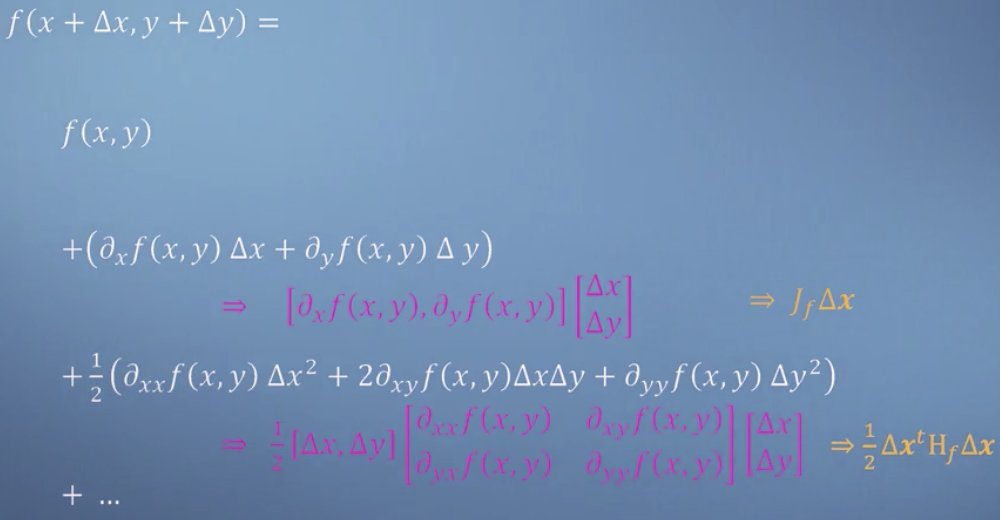
综上，我们有一个简洁的针对多元函数$f(\mathbf{x})$ 的二阶泰勒级数：
$$
\color{blue}{f(\mathbf{x+\Delta x}) = f(\mathbf{x}) + \mathbf{J}_f \mathbf{\Delta x} + \frac{1}{2} \mathbf{\Delta x}^T \mathbf{H}_f \mathbf{\Delta x} + \cdots }
$$
其中，
- $\mathbf{x}\in \mathbb{R}^n$ is vector
- $\mathbf{\Delta x}$ means $[\Delta x_1,\Delta x_2,\cdots,\Delta x_n]^T$.
这里有一个2个练习帮助理解：